Witam nazywam się Adam Jasiewicz
Kurs HTML i CSS - Zapraszam ;)
Jeżeli zapoznałeś się z preludium, czyli ze wstępem do tego kursu HTML zapewne wiesz już jak utworzyć plik typu HTML, który będzie Ci potrzebny podczas nauki języka HTML.
Jezeli jeszcze tego nie potrafisz nie martw się, wejdź w ten link do strony co powinieneś wiedzieć o HTML →Wszystko o HTML
Co to jest wogóle strona internetowa?
↪Srona internetowa to Dokument utworzony w języku HTML lub XHTML, zapisany w pliku i
umieszczony na serwerze, odczytywany na komputerze użytkownika za
pomocą przeglądarki internetowej.
Co to jest XHTML?
↪XHTML to Metajęzyk oparty na zwykłym tekście, przeznaczony do
definiowania języków znakowania
Przykładowe programy do edycjki kodu
- Notepad++
- Brackets
- Visual Studio Code
Jest też coś takiego jak Edytory Graficznie są to np:
- Adobe Dreamweaver
- Visual web Deweloper
Języki programowania:
- HTML - HyperText Mark-up Language (Lecz nie do końca jest to język programowania)
- CSS - Cascading Style Sheets
- PHP - Hypertext Preprocessor
- Java Script
< znacznik>Tekst</znacznik>
Istnieją takie Znaczniki, które nie wymagają zamykania. Są to na przykład:
↪<Br> - znacznik nowej linii;
↪<Hr> - znacznik linii;
↪<img> - znacznik wrzucający grafikę.
Podstawowe i najpopularniejsze znaczniki HTML:
- <HTML> - Znaczniki dokumentu. Między nimi umieszczana jest cała treść dokumentu.
- <head> - Sekcja HEAD zawiera podstawowe informacje o dokumencie.
- <body> - Sekcja BODY zawiera konkretną treść dokumentu: znaczniki i tekst strony WWW.
- <title> - Tekst zawarty między znacznikami jest tytułem strony widocznym w belce tytułowej przeglądarki. Znacznik używany jest w sekcji HEAD.
- <meta> - Szczegółowo opisuje zawartość dokumentu.
- <p> - Oznacza blok nowego akapitu.
- <br> - Złamanie wiersza bez nowego akapitu.
- <b> - Czcionka pogrubiona.
- <i> - Czcionka pochylona.
- <u> - Czcionka podkreślona.
- <sup> - Indeks górny
- <sub> - Indeks dolny.
- <font> - Ustala czcionkę.
- <hn> - Nagłówek powoduje utworzenie nowego akapitu i wpisany tekst przyjmuje wartość n – od 1 do 7, h1 to największy nagłówek, a h7 – najmniejszy.
- <hr> - Linia poziona.
- <center> - Wyśrodkowanie.
- <right> - Wyrównanie do prawej strony.
- <left> - Wyrównanie do lewej strony.
- <!-- ... -- > - komentarz, niewidoczny dla użytkownika tekst
- <!DOCTYPE html> - określa typ dokumentu
Odsyłacze - podstawowe znaczniki:
Grafika - podstawowoe znaczniki:
Jeżeli znasz już podstawowe pojęcia HTML możemy zacząć tworzyć stornę :)
jest pierwsza część strony. Wszystkie użyte znaczniki masz powyżej wytłumaczone :
W znaczniku p jest to tylko przykład
Druga część strony wygląda następująco:
Znacznik <Div>
↪Opisuje nam logiczną strukturę witryny – podstawowy element tworzący
układ strony.
↪Za pomocą div’ów grupujemy elementy strony albo wydzielamy
fragment dokumentu.
↪Div tworzy nam oddzielne bloki, a za ich pomocą możemy podzielić
stronę na: nagłówek, panel lewy/prawy, paski nawigacji czy stopka.
↪Div układa się zawsze pod poprzednim elementem blokowym
↪Formatujemy i pozycjonujemy je poprzez CSS w wyniku
czego otrzymujemy wymagany wygląd - layout strony.
↪Każdy DIV powinien posiadać swoją unikatową nazwę
⤥<div id=„nazwa”......</div>
⤥<div class=„nazwa”...</div>
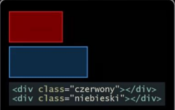
Znaki semantyczne podziału strony
Hiperłącza (Odsyłacze):
↪<a href=„adres URL”> Tekst hiperłącza></a>
↪<a href="plik.html">Odsyłacz do innego dokumentu</a>
Listy:
↪<ul> - Lista nieuporządkowana wyświetla wykaz nienumerowany
⤥<ul type=circle>
⤥<ul type=square>
↪<ol> - Lista uporządkowana sporządza wykaz numerowany.
⤥<ol type="a">
⤥<ol type="A">
⤥<ol type="I">
⤥<ol type="i">
↪<li> - Punkt listy.
Dodając do ol atrybut start definiujemy od którego miejsca ma się rozpocząc odliczanie
⤥<ol type="A" start="3">
⤥<ol start="3">
Tabele
↪<tr> - Wiersze tabeli.
↪<th> - Nagłówek tabeli. Domyślnie są pogrubione i wyśrodkowane.
↪<td> - komórka w wierszu.
↪<caption> - tytuł tabeli.
Musi się on znaleźć bezpośrednio po znaczniku <table>
Scalanie komórek:
↪Aby połączyć kilka komórek w wierszu należy w znaczniku <td> i <th> zdefiniować atrybut collspan=„n”.
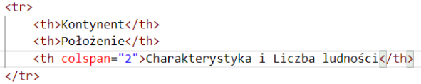
↪Aby połączyć komórki z sąsiednich wierszy
w kolumnie, dla znacznika <td> nadajemy atrybut rowspan=„n”.
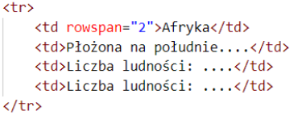
CSS
Cechy jęzuka CSS:
↪
↪Pozwala zapisać wszystkie informacje dotyczące wyglądu dokumentu w oddzielnym pliku tekstowym dołączonym do dokumentów HTML.
↪Umożliwia stosowanie różnych układów graficznych w zależności od typu urządzenia, na którym zamierzamy wyświetlać projektowaną stronę.
↪Umożliwia formatowanie wielu dokumentów przy użyciu jednego arkusza stylów.
Dołanczanie arkuszu stylów do strony:
↪<link rel="stylesheet" href="nazwa pliku.css"> - Zawsze znajduje się w znaczniku head.
Selektory:
↪Uniwersalny
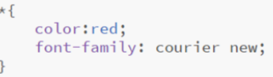
↪Dziecka
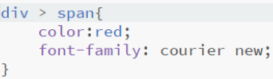
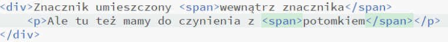
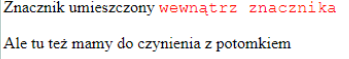
↪Elementu
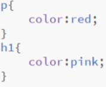
↪Potomka
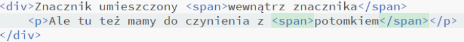
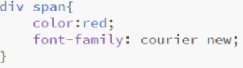
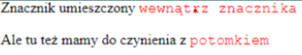
Struktura strony wygląda mniej więcej w taki sposób: